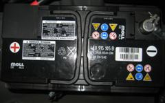
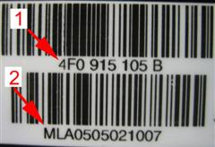

The vehicle´s control unit for energy management regulates the battery charge, the energy load and the energy saving functions. To regulate this correctly, it is necessary for the control unit to know the battery´s capacity. Therefore, a battery selected by the manufacturer, shall be mounted and coded into the control unit. A label with product number and serial number is sticked on the battery (see picture below). These number combinations shall be coded into the control unit when a battery exchange is performed.


Note:
During the reading of measure values and coding, a battery charger must not be connected .
Coding shall only be performed when a battery exchange is performed, because all historic data concerning standing current and rest potential will be erased.
The product number and serial number shall be entered as they are written on the label, use capital letters.
Test prerequisites:
New original manufacturer battery mounted.
Ignition on.
Battery voltage OK.
Procedure:
Choose the function: Battery exchange
A dialog box with an entering field for the product number is presented. Enter the product number (number 1 in picture). Press OK.
A dialog box with an entering field for the serial number is presented. Enter the serial number (number 2 in picture). Press OK.
A dialog box presents: Operation succeded/failed.